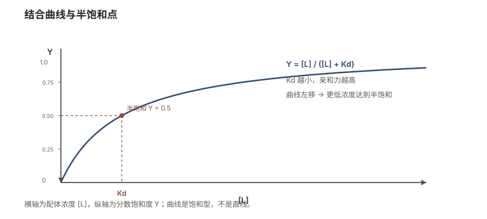
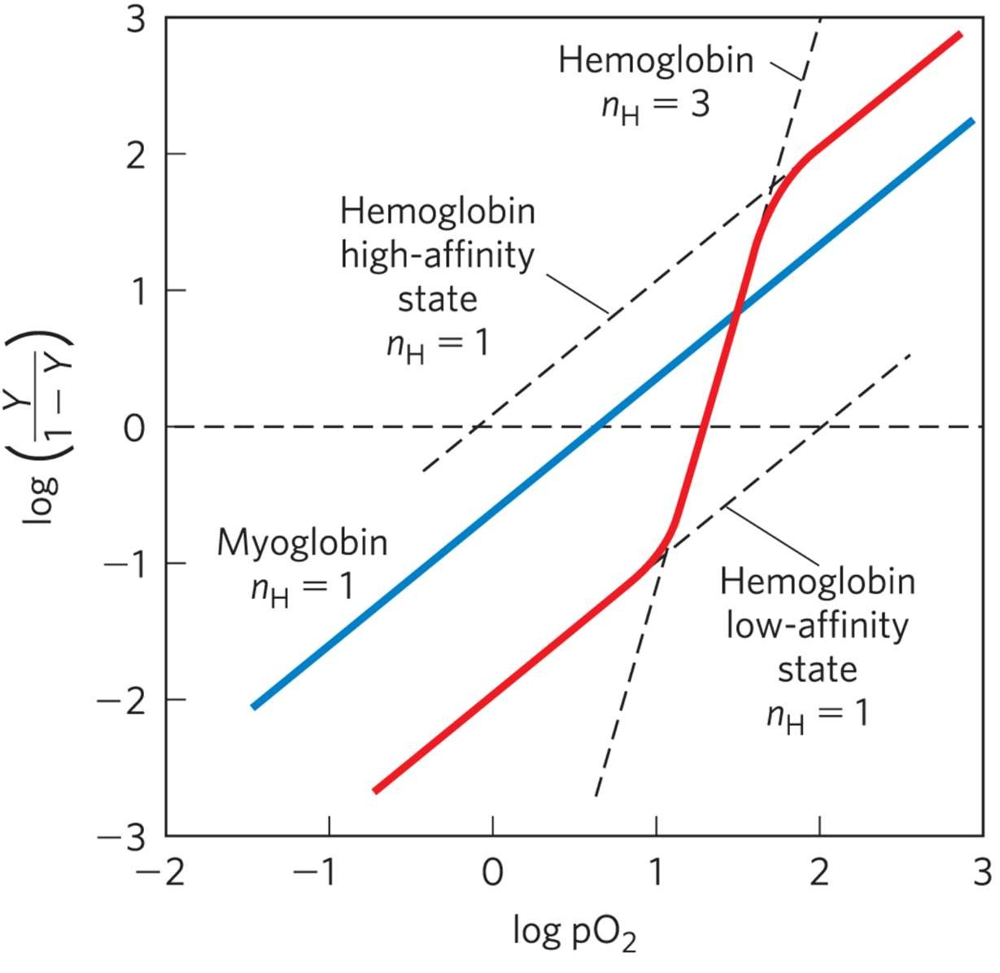

BIO105 · 第 4 章
化学动力学与热力学
Chemical Kinetics & Thermodynamics
虚线下划线为术语；悬停查看中文、英文与释义，完整词典见“术语”。
本章目录
本讲分两部分：先建立蛋白-配体结合的动力学语言（Kd、半饱和、协同性与 Hill 方程），再用 Gibbs 自由能判断反应能否自发，并以 ATP 水解为例比较标准态与细胞内实际态。
本章要点
- 结合反应 PL ⇌ P + L 的平衡由 Kd = kd/ka 描述；Kd 越小，亲和力越高。
- 分数饱和度 Y = [L]/([L] + Kd)；当 [L] = Kd 时正好半饱和。
- 肌红蛋白是单体，结合曲线为双曲线，P50 = 0.26 kPa；血红蛋白是四聚体，曲线为 S 形。
- Hill 方程 log(Y/(1−Y)) = n log[L] − log Kd，斜率 n 即协同性指标；血红蛋白最大 n ≈ 3。
- 2,3-BPG 是血红蛋白的变构效应物，稳定 T 态、降低对 O2 的亲和力，使高原组织供氧得以维持。
- ΔG = G终态 − G始态；ΔG < 0 为放能、可自发；ΔG = ΔH − TΔS。
- ΔG° = −RT ln Keq，把平衡常数与标准自由能联系起来；ATP 水解的 ΔG° 约为 −30.5 kJ/mol。
- 细胞内 ATP 水解的实际 ΔG 约为 −52 kJ/mol，比标准值更负，因为浓度远低于 1 M 且真实底物是 MgATP2−。
4.1 为什么动力学重要：从膝跳反射说起
讲义用一个日常现象开场：膝跳反射（knee-jerk reflex）。医生敲击髌腱，小腿在极短时间内弹起——这个动作的速度本身就是化学问题。信号必须足够快地产生、传递与终止，否则反射会拖成缓慢的抽搐。
分子层面的解释落在乙酰胆碱acetylcholine, ACh上。运动神经元末梢释放 ACh，ACh 与肌细胞膜上的受体结合，受体开放阳离子通道，膜去极化，肌肉收缩。整个过程的关键不只是“结合”，而是结合的速率与解离的速率：结合要快，信号才能及时启动；解离与降解要快，信号才能及时关闭。这正是化学动力学chemical kinetics要处理的问题——反应有多快，而不是反应最终走到哪里。
讲义由此提出本讲第一部分的任务：理解化学反应的速率，并用一个最简单的模型——蛋白与配体的结合——把速率常数与平衡联系起来。
L4 p.5–7
4.2 蛋白-配体结合：Kd 与分数饱和度
最简单的模型是一个蛋白 P 与一个配体 L 的可逆结合：
正反应（结合）的速率 va = ka[P][L]，逆反应（解离）的速率 vd = kd[PL]，其中 ka 与 kd 是速率常数rate constant。达到平衡时两速率相等：
这里的 Kd 是解离常数dissociation constant，定义为配体释放反应的平衡常数。它与结合常数互为倒数关系，但课程统一使用 Kd，因为它的物理意义直观：Kd 越小，亲和力越高。
实验中更容易测的是分数饱和度fractional saturation Y，即被配体占据的结合位点占总位点的比例：
这个式子有一个漂亮的推论：当 [L] = Kd 时，Y = 0.5，即一半的结合位点被占据，称为半饱和half-saturation。因此 Kd 可以直接从结合曲线上读出——曲线达到最大值一半时对应的配体浓度就是 Kd。
Kd 的量纲是浓度，讲义给出的范围从 fM、pM、nM、μM 到 mM。这个跨度极大：fM 级的结合几乎不可逆，mM 级的结合很弱。读图时要注意，结合曲线是双曲线而非直线，因为位点会被逐渐占满（饱和）。


绘图提示词
Clean vector plot of fractional saturation Y on the vertical axis from 0 to 1 against ligand concentration on the horizontal axis, showing a rectangular hyperbola that plateaus at 1, with a dashed horizontal line at Y equals 0.5 meeting the curve at a dashed vertical line labelled Kd on the x axis. A second curve for a higher-affinity protein is shifted to the left with a smaller Kd. Flat 2D line art, thin 1.5 px strokes, muted slate blue and warm grey palette, white background, English labels, no cartoon, no gradient, no shadow.
L4 p.7–10
4.3 定量练习：由 Y 求 [L]
讲义给出两道典型题目，做法都是把已知量代入 Y = [L]/([L] + Kd)。
第一题：两个蛋白 A 与 B 结合同一配体 L，给出两条结合曲线，要求读出各自的 Kd 并判断哪个亲和力更高。解法是找 Y = 0.5 对应的 [L]：Kd 较小的那条曲线亲和力更高，表现为曲线整体左移、在更低浓度就达到半饱和。
第二题：某蛋白的 Kd = 2.0 μM，问 Y = 0.6 时 [L] 是多少。代入：
结果 3.0 μM 大于 Kd，符合直觉：要占据 60% 的位点，配体浓度必须高于半饱和所需的浓度。这类题的关键不是背公式，而是认识到 Y 与 [L] 的关系是饱和型而非线性——浓度加倍不等于占有度加倍。
L4 p.11
4.4 氧结合：P50 与肌红蛋白
把配体换成氧气，模型变为 PO2 ⇌ P + O2。氧气作为配体有一个实验上的便利：可以通过气相中的氧分压（pO2）来设定溶液中溶解氧的浓度。因此把 [L] 换成 pO2，把 Kd 换成 P50（半饱和时的氧分压）：
讲义先讨论 O2 分子本身。它的分子轨道图显示两个双自由基电子（biradical electrons）分别占据两个 π* 轨道——这解释了为什么 O2 是顺磁性的，也解释了为什么它能接受电子被逐步还原（第 5 章的四电子还原）。
压力单位需要换算：1 atm = 101.3 kPa。讲义给出三个参考值：海平面空气 pO2 = 21.3 kPa，肺泡气 pO2 = 13.3 kPa，珠峰峰顶 pO2 = 7.1 kPa。这些数字在后面讨论血红蛋白的生理功能时会用到。
肌红蛋白myoglobin的结合曲线是标准双曲线，P50 仅为 0.26 kPa。这个值远低于肺泡的 13.3 kPa，意味着在生理氧分压下肌红蛋白几乎饱和——它的功能是储存氧，而不是在宽范围内调节释放。肌红蛋白是单体，一个多肽链含一个血红素。
L4 p.12–16
4.5 协同结合与 Hill 方程
血红蛋白由四个亚基组成，每个亚基含一个血红素，因此一个血红蛋白分子可结合四个 O2。第一个 O2 结合后，其余亚基的构象改变，对 O2 的亲和力升高——这就是协同结合cooperative binding。历史上，Archibald Hill 在 1910 年首次定量分析这一现象，由此发展出研究多亚基蛋白配体结合的通用方法。
对含 n 个结合位点的蛋白，平衡写成：
两边取对数并整理，得到 Hill 方程Hill equation：
以 log(Y/(1−Y)) 对 log[L] 作图，就是Hill 作图Hill plot，其斜率应为 n。对氧结合，把 [L] 换成 pO2、Kd 换成 P50n，则
斜率 n 的含义是本节的考点。当 n = 1 时没有协同性，结合曲线就是普通的双曲线，肌红蛋白属于这一类。nH > 1 表示正协同，即一个配体结合后使后续结合更容易。血红蛋白的最大协同性大约对应 n = 3——注意不是 4，因为四个位点不可能同时以完全协同的方式工作。
S 形（sigmoid）曲线的物理意义，讲义给出一个很好的说法：它可以被看作一条混合曲线，反映了从低亲和状态向高亲和状态的过渡。曲线的下端对应 T 态（低亲和），上端对应 R 态（高亲和），中间的陡峭段正是协同转变发生的区域。这种形状使血红蛋白在窄的氧分压区间内从“几乎不结合”迅速变为“几乎饱和”，从而实现高效的装载与卸载。

Clean vector figure with two panels: left panel plots fractional saturation Y against pO2 showing a hyperbolic curve for myoglobin with a low P50 and a right-shifted sigmoid curve for hemoglobin; right panel is a Hill plot of log Y over 1 minus Y against log pO2 with a slope of 1 line for myoglobin and a steeper line of slope about 3 for hemoglobin. Flat 2D line art, thin 1.5 px strokes, muted slate blue and warm grey palette, white background, English labels, no cartoon, no gradient, no shadow.
L4 p.17–19
4.6 血红蛋白的生理：肺、组织与 2,3-BPG
血红蛋白必须在两个截然不同的氧分压下工作：在肺中 pO2 约 13.3 kPa，需要高效结合氧；在组织中 pO2 约 4 kPa，需要有效释放氧。S 形曲线正好满足这一要求——在 13.3 kPa 处接近饱和，在 4 kPa 处急剧下降，释放大量氧。
调节这一曲线位置的关键分子是 2,3-二磷酸甘油酸2,3-bisphosphoglycerate, BPG，它是血红蛋白的变构效应物allosteric effector。讲义给出的机制是：BPG 结合并稳定脱氧血红蛋白的 T 态；BPG 的负电荷与 T 态中若干带正电的基团相互作用。当血红蛋白氧合转为 R 态时，BPG 的结合口袋消失，BPG 被释放。因此 BPG 的作用等价于“降低对 O2 的亲和力”，使曲线右移。
生理数据值得记住：正常人体血液中 BPG 浓度在海平面约 5 mM，在高海拔约 8 mM。海平面时，组织释放的氧约为血液最大携氧量的 38%；到高海拔，氧输送下降约四分之一，降到最大值的 30%。但 BPG 浓度升高会降低血红蛋白对 O2 的亲和力，使约 37% 的氧仍能送达组织。这是一条典型的负反馈式补偿：缺氧 → BPG 升高 → 亲和力下降 → 组织提取率回升。
L4 p.20–22
4.7 自由能与反应的自发性
讲义的第二个大问题是热力学：一个反应到底会不会自发发生？判断依据是吉布斯自由能Gibbs free energy的变化。1878 年，耶鲁的 J. Willard Gibbs 定义了这个函数 G。其变化量为：
判断规则很干脆：若一个过程在体系中自发发生，则 ΔG 为负。反过来，ΔG 为正的过程不能自发进行，必须由外界输入能量。ΔG = 0 时体系处于平衡，没有净驱动力，不能做功。
ΔG 可以拆成焓与熵两项：
其中 ΔH 是体系的焓变enthalpy change，ΔS 是熵变entropy change，T 是绝对温度。这个式子的意义在于：自发性不只由“放热”决定。一个吸热（ΔH > 0）的过程，只要熵增足够大，仍可自发——第 2 章的疏水效应就是典型例子。
讲义用两个类比说明能量偶联energy coupling。物理学版本：一个球从高处滚下是放能的（ΔG < 0），若要把另一个球推上坡（吸能，ΔG > 0），可以让两者联动，只要总 ΔG < 0，整个过程就能发生。化学版本相同：把一个吸能反应与一个放能反应耦合，若耦合后的总 ΔG < 0，则吸能的那一步也被“带动”了。细胞中绝大多数合成反应都靠这种方式驱动，ATP 水解是最常用的“放能伙伴”。
L4 p.23–27
4.8 平衡常数、ΔG° 与 ATP 水解
如何估计 ΔG？讲义给出的基本方法是测平衡常数。对反应 aA + bB → cC + dD：
式中各浓度均为平衡时的浓度。两个性质要记住：Keq 是无量纲的；它同时等于正逆反应速率常数之比 k1/k2，因为平衡时正逆速率相等。
实际自由能变化还取决于起始浓度。Gibbs 给出的关系是：
ΔG° 是标准自由能变化standard free-energy change，对特定反应是一个常数；R 是气体常数，T 是绝对温度；方括号下标 i 表示起始浓度。ΔG 衡量的是体系距离平衡有多远——离平衡越远，驱动力越大。
当反应达到平衡，ΔG = 0，此时起始浓度等于平衡浓度，浓度商就是 Keq。代入上式得：
这条式子说明 ΔG° 只是表达反应驱动力的第二种方式。由于 Keq 可实验测定，ΔG° 也就可以算出。规律是：Keq ≫ 1 时 ΔG° 为大负值；Keq ≪ 1 时 ΔG° 为大正值。ΔG° 与 ΔG 的单位都是 J/mol（或 cal/mol）。
讲义给出 ATP 水解的算例：若 ATP → ADP + Pi 的 Keq = 2.22 × 105，在 25 °C 下
反过来读：在标准条件下（25 °C，ATP、ADP、Pi 各 1 M）合成 1 mol ATP，至少需要输入 30.5 kJ 能量。这个数字在第 6 章会再次出现——一个红光光子（700 nm）的能量约 171 kJ/einstein，足够合成数个 ATP。
为什么 ATP 水解放出这么多能量？讲义列出三条化学原因：
- 电荷分离：水解后产物分开，缓解了 ATP 上四个负电荷之间的静电排斥；
- 共振稳定：产物无机磷酸 Pi 形成共振杂化体，四个磷–氧键具有同等程度的双键性质，氢离子也不永久固定在任何一个氧上；
- 溶剂化增强：产物 Pi 与 ADP 的水合程度高于 ATP，使产物相对更稳定。
L4 p.28–33
4.9 细胞内真实的 ΔG：为什么是 −52 而非 −30.5
标准态是一种人为约定：所有溶质 1 M、25 °C。活细胞不满足这个条件，因此 ATP 水解的实际 ΔG 与 ΔG° 差别很大。讲义给出两个原因：
- 细胞中 ATP、ADP 与 Pi 的浓度并不相等，而且都远低于标准态的 1.0 M；
- 胞质中的 Mg2+ 会与 ATP、ADP 结合；对大多数以 ATP 为磷酸基供体的酶促反应，真正的底物是 MgATP2−。
以人红细胞为例，浓度为 ATP 2.25 mM、ADP 0.25 mM、Pi 1.65 mM，温度取 310 K：
= −30.5 + (8.315 × 10−3 kJ/mol·K)(310 K) ln(1.8 × 10−4)
= −30.5 − 22 = −52 kJ/mol
结果比标准值负得多。原因是产物（ADP 与 Pi）的浓度相对于反应物（ATP）很低，浓度商远小于 1，ln 项为负，于是 ΔG 更负。这意味着细胞内的 ATP 水解驱动力比标准态更强——细胞通过维持高 ATP/ADP 比值，把自己置于远离平衡的位置，从而让每一次水解都能做更多功。
讲义最后用五条总结收束：Kd 是半饱和时的配体浓度，越小亲和力越高；Hill 作图展示血红蛋白的协同氧结合，使肺中高效摄取、组织中有效释放成为可能；ΔG 决定反应是放能（自发）还是吸能（非自发）；ΔG° 可由 Keq 算出；用 ΔG° 或 ΔG′° 可以在共同基线上比较不同细胞过程的能量学。
L4 p.34–37